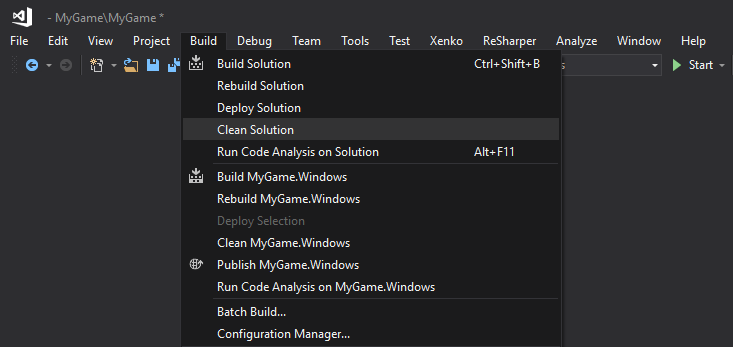
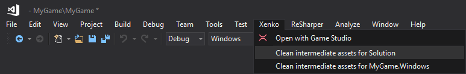
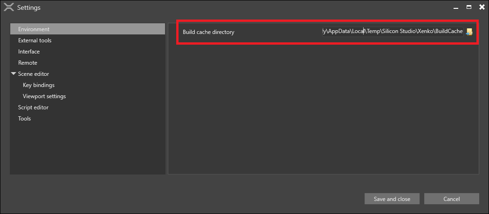
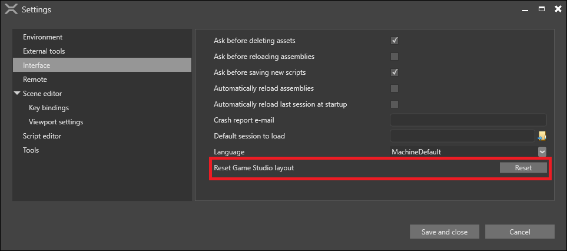

Cached files
When you build your project, Stride caches the assets and code in folders inside the project.
You might want to clean the cache if:
the cache is taking up too much space on disk
assets don't update in-game after you edit or delete them
Clean the cache from Visual Studio
To clean the code cache, under Build, select Clean Solution.

If you have the Stride Visual Studio extension installed, you can also clean the asset cache. Using VS 2022: To do this, under Extensions > Stride, select Clean intermediate assets for Solution.

Rebuild the project to rebuild the cache from scratch.
Clean the cache manually
If cleaning the cache from Visual Studio doesn't work, try deleting the files manually.
Delete the following folders:
the binary cache: ~/MyGame/MyGame/Bin
the asset cache: ~/MyGame/MyGame/Cache
the obj folders in the platform folders for your game (eg ~/MyGame.iOS/obj)
If you're developing for iOS, on your Mac, also delete: ~/Library/Caches/Xamarin/mtbs/builds/MyGame
Rebuild the project to rebuild the cache from scratch.
Clear the Game Studio caches
In addition to the caches Stride creates for your project, Game Studio keeps caches for the editor.
Asset cache
To speed up asset loading in the editor, Game Studio saves a cache of asset references. It contains data about every asset ever loaded in every project. This means it can grow very large over time.
By default, the folder is in: %temp%/Stride
Tip
To check or change where Game Studio saves the cache, see Edit > Settings > Environment > Build cache directory. 
To clean the cache, delete the folder and run Game Studio again.
Settings cache
Game Studio saves editor information (such as window positions and recently-opened projects) in: %AppData%/Stride
Game Studio also saves information about open tabs and the editor camera position in the .sdpkg.user file in the project folder (eg ~/MyGame/MyGame/MyGame.sdpkg.user).
These files are small, but you might want to delete them if you get Game Studio into a bad state. Deleting them doesn't affect anything in your project.
After you delete cache files, when you start Game Studio, it builds a new cache using the default settings.
Tip
You can also reset the Game Studio layout without clearing the cache in Edit > Settings > Interface > Reset Game Studio layout. 